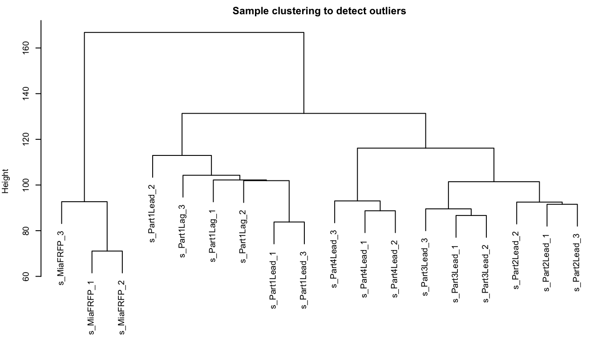
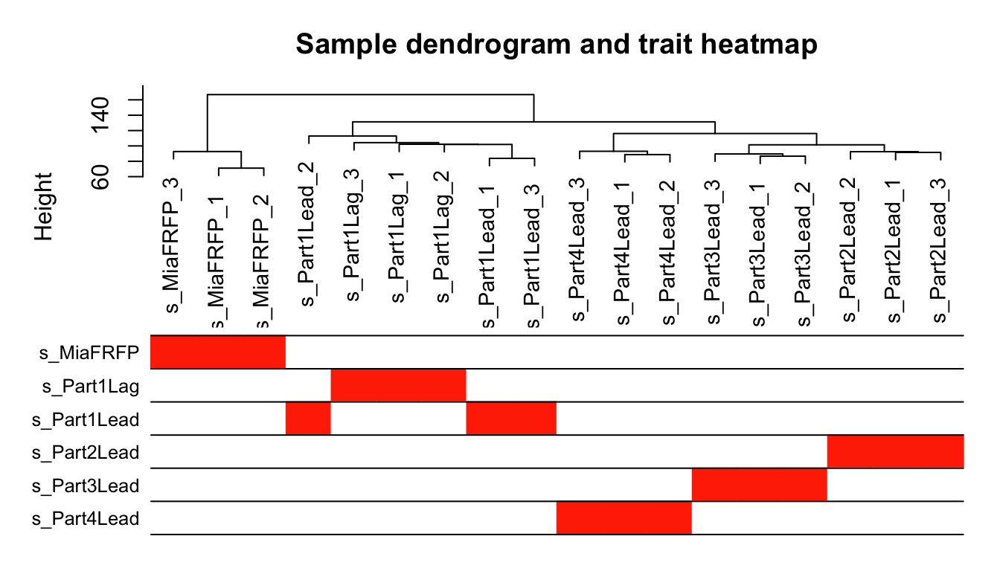
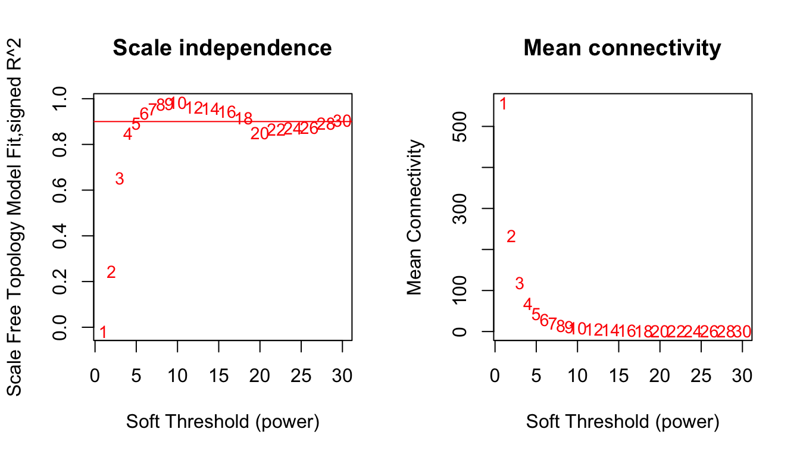
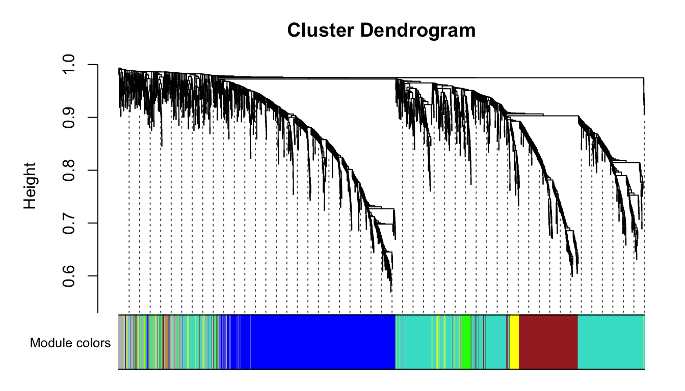
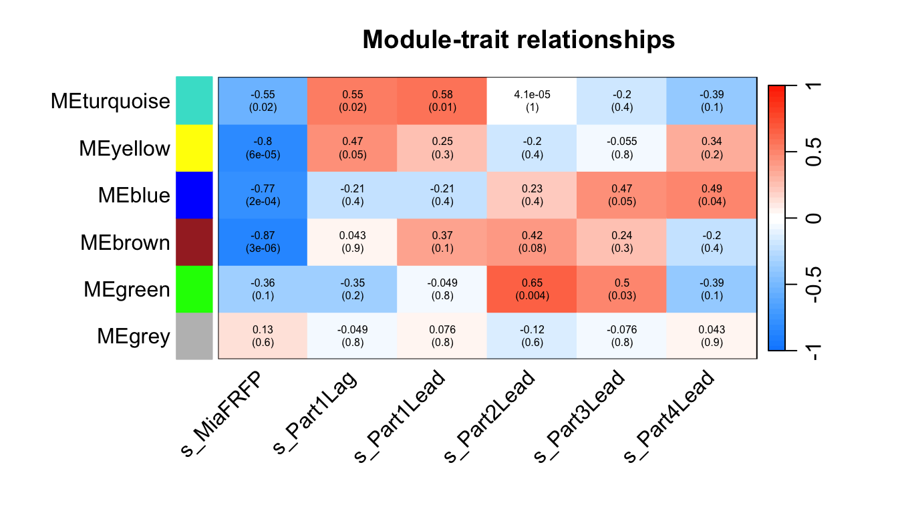
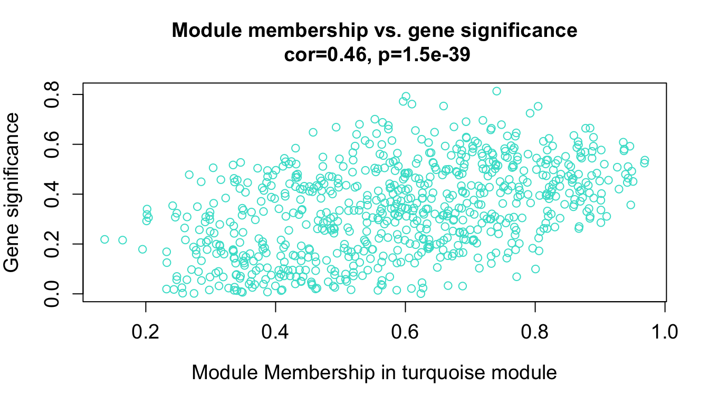
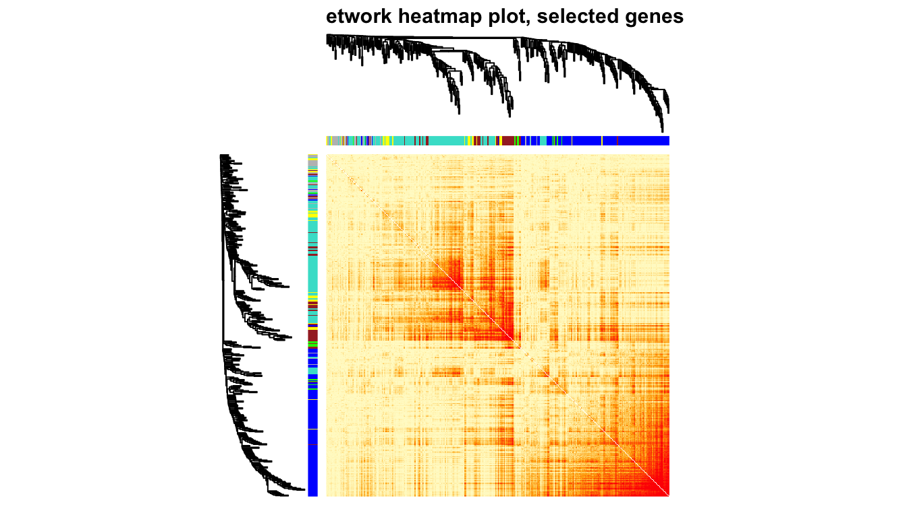
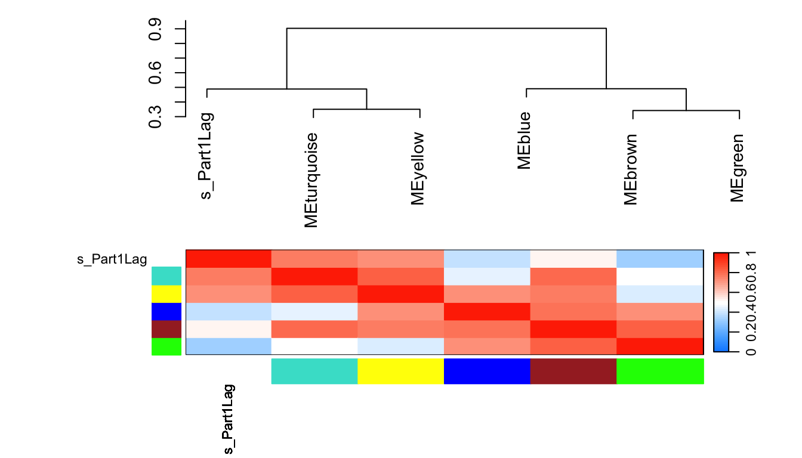

第 10 章 WGCNA
10.2 默认参数（可选）
options(stringsAsFactors = FALSE)
# 打开多线程
enableWGCNAThreads()
# 官方推荐 "signed" 或 "signed hybrid"
# 用signed获得的模块包含的基因会少
type = "unsigned"
# 相关性计算
# 官方推荐 biweight mid-correlation & bicor
# corType: pearson or bicor
corType = "bicor"
corFnc = ifelse(corType=="pearson", cor, bicor)
# 对二元变量，如样本性状信息计算相关性时，
# 或基因表达严重依赖于疾病状态时，需设置下面参数
maxPOutliers = ifelse(corType=="pearson",1,0.05)
# 关联样品性状的二元变量时，设置
robustY = ifelse(corType=="pearson",T,F)网络类型 (type)：
“unsigned”：在无符号网络中，正相关和负相关被同等对待，这意味着基因可以被分到同一个模块中，无论它们是正相关还是负相关。这通常会导致模块更大，因为限制较少。“signed” 或 “signed hybrid”：有符号网络区分正相关和负相关。模块通常包含正相关的基因，导致模块更小且更同质化。注释正确指出，有符号网络通常会产生包含较少基因的模块。
相关性类型 (corType)：
“pearson”：皮尔逊相关性测量变量之间的线性关系。它假设数据呈正态分布，对异常值敏感。
“bicor”：双权中值相关性（bicor）是一种稳健的相关性测量方法，与皮尔逊相关性相比，对异常值不太敏感。它在生物数据中非常有用，因为异常值较为常见。注释正确指出，“bicor”在生物数据中推荐使用，因为它的稳健性。
相关性函数 (corFnc)：
使用 ifelse 根据 corType 选择相关性函数。对于皮尔逊选择 cor，对于双权中值相关性选择 bicor。
maxPOutliers：
这个参数在使用双权中值相关性时很重要。它设置可以被视为异常值的样本最大比例。对于皮尔逊相关性，这个值设为1，意味着不将任何样本视为异常值。对于bicor，典型设置可能是0.05，允许一些样本被视为异常值以提高稳健性。注释正确描述了这个参数的用途。
robustY：
这个参数在将基因表达数据与二元性状（例如疾病状态）相关联时使用。它决定是否在计算涉及二元变量的相关性时使用稳健方法。对于皮尔逊相关性，通常设为 TRUE，而对于 bicor，由于 bicor 本身是稳健的，所以设为 FALSE。注释准确反映了这个参数的用途。
# 导入分组信息
design <- fread("DATA/WGCNA/design.csv") %>%
mutate(group = factor(group, levels = c("s_MiaFRFP",
"s_Part1Lag",
"s_Part1Lead",
"s_Part2Lead",
"s_Part3Lead",
"s_Part4Lead")))
head(design)[1:2, 1:2]
## run group
## <char> <fctr>
## 1: SRR19913146 s_MiaFRFP
## 2: SRR19913145 s_MiaFRFP
traitData <- design %>%
dplyr::select(sample, group) %>%
dcast(sample ~ group, fun.aggregate = length, value.var = "group") %>%
column_to_rownames("sample")
head(traitData)[1:4, 1:4]
## s_MiaFRFP s_Part1Lag s_Part1Lead s_Part2Lead
## s_MiaFRFP_1 1 0 0 0
## s_MiaFRFP_2 1 0 0 0
## s_MiaFRFP_3 1 0 0 0
## s_Part1Lag_1 0 1 0 0
group_list <- design$group# 导入 counts 数据
counts <- fread("DATA/WGCNA/counts.csv") %>%
distinct(name, .keep_all = T) %>%
dplyr::select(name, design$sample, everything())
head(counts)
## name s_MiaFRFP_1 s_MiaFRFP_2 s_MiaFRFP_3 s_Part1Lag_1
## <char> <int> <int> <int> <int>
## 1: ENSG00000228037 2 0 0 2
## 2: ENSG00000142611 2088 1753 2396 358
## 3: ENSG00000284616 0 0 0 0
## 4: ENSG00000157911 5039 3794 4870 2294
## 5: ENSG00000260972 0 0 0 0
## 6: ENSG00000224340 0 0 1 1
## s_Part1Lag_2 s_Part1Lag_3 s_Part1Lead_1 s_Part1Lead_2 s_Part1Lead_3
## <int> <int> <int> <int> <int>
## 1: 9 0 0 2 0
## 2: 272 264 204 228 328
## 3: 0 2 0 0 0
## 4: 1996 2352 2543 1666 2373
## 5: 0 0 0 0 0
## 6: 0 2 2 0 1
## s_Part2Lead_1 s_Part2Lead_2 s_Part2Lead_3 s_Part3Lead_1 s_Part3Lead_2
## <int> <int> <int> <int> <int>
## 1: 0 2 0 0 0
## 2: 225 136 235 210 331
## 3: 0 0 0 0 0
## 4: 2931 2624 3086 1928 2971
## 5: 0 0 0 0 0
## 6: 0 0 0 0 0
## s_Part3Lead_3 s_Part4Lead_1 s_Part4Lead_2 s_Part4Lead_3 gene
## <int> <int> <int> <int> <char>
## 1: 0 0 0 0 ENSG00000228037
## 2: 444 230 120 192 PRDM16
## 3: 0 0 0 0 ENSG00000284616
## 4: 3031 2048 2407 4193 PEX10
## 5: 0 0 0 0 ENSG00000260972
## 6: 0 0 0 0 RPL21P21
# 过滤低表达基因
mat <- dplyr::select(counts, design$sample)
rownames(mat) <- counts$name
# 筛选出至少在两个样本中表达的基因
keep_feature <- rowSums (mat > 1) >= 2 ;table(keep_feature)
## keep_feature
## FALSE TRUE
## 27268 35872
ensembl_matrix <- mat[keep_feature, ]
rownames(ensembl_matrix) <- rownames(mat)[keep_feature]
ensembl_matrix <- rownames_to_column(ensembl_matrix, var = "name")
library(biomaRt)
# 连接ensembl数据库
ensembl <- useMart("ensembl", dataset = "hsapiens_gene_ensembl")
# atr <- listAttributes(ensembl) # 查看数据库中有哪些信息
# 获得数据库中关注的 ID 信息
ids <- getBM(attributes = c("ensembl_gene_id", "hgnc_symbol","entrezgene_id"),
mart = ensembl)
# 修改列名
colnames(ids) <- c("ENSEMBL", "SYMBOL", "ENTREZ")
# 去除重复 ID
ids=ids[!duplicated(ids$ENSEMBL),]
# 连接基因 counts 矩阵和 ID 信息
All_gene_counts <- merge(ensembl_matrix, ids, by.x = "name", by.y = "ENSEMBL", all.x = TRUE) %>%
dplyr::select(name, SYMBOL, ENTREZ, everything())
# 以 SYMBOL 为行名的矩阵
symbol_matrix <- All_gene_counts %>%
dplyr::filter(!is.na(SYMBOL)) %>%
distinct(SYMBOL, .keep_all = T) %>%
column_to_rownames("SYMBOL") %>%
dplyr::select(design$sample)
dataExpr <- as.data.frame(lapply(symbol_matrix, function(x) as.numeric(as.character(x))))
rownames(dataExpr) <- rownames(symbol_matrix)10.3 表达量聚类分析
10.3.1 选择合适基因集，过滤缺失值
# 筛选关注的基因，并转换为行为基因名，列为样本名的矩阵。
## 策略 1：mad最大的前5000，
### 或者保留基因总数的前1/4(round(0.25*nrow(dataExpr)))。
### mad可以改为var（方差）。
### 如果要保留所有的基因进行筛选分析保留datExpr0 = t(dataExpr）。
dataExpr = t(dataExpr[order(apply(dataExpr, 1, mad), decreasing = T)[1:2000],])
dataExpr[1:4,1:4]
## FAM83A DPPA3 MMP1 HHLA2
## s_MiaFRFP_1 0 0.000000 9.189825 0
## s_MiaFRFP_2 0 0.000000 8.857981 0
## s_MiaFRFP_3 0 0.000000 7.636625 0
## s_Part1Lag_1 0 9.353147 4.807355 0
## 策略 2： 筛选中位绝对偏差前75%的基因，至少MAD大于0.01
# m.mad <- apply(dataExpr,1,mad)
# dataExprVar <- dataExpr[which(m.mad >
# max(quantile(m.mad, probs=seq(0, 1, 0.25))[2],0.01)),]
# dataExpr <- as.data.frame(t(dataExprVar))
# 检测缺失值
gsg = goodSamplesGenes(dataExpr, verbose = 3)
## Flagging genes and samples with too many missing values...
## ..step 1
if (!gsg$allOK){
# Optionally, print the gene and sample names that were removed:
if (sum(!gsg$goodGenes)>0)
printFlush(paste("Removing genes:",
paste(names(dataExpr)[!gsg$goodGenes], collapse = ",")));
if (sum(!gsg$goodSamples)>0)
printFlush(paste("Removing samples:",
paste(rownames(dataExpr)[!gsg$goodSamples], collapse = ",")));
# Remove the offending genes and samples from the data:
dataExpr = dataExpr[gsg$goodSamples, gsg$goodGenes]
}
nGenes = ncol(dataExpr)
nSamples = nrow(dataExpr)
dim(dataExpr)
## [1] 18 2000
head(dataExpr)[,1:4]
## FAM83A DPPA3 MMP1 HHLA2
## s_MiaFRFP_1 0.000000 0.000000 9.189825 0
## s_MiaFRFP_2 0.000000 0.000000 8.857981 0
## s_MiaFRFP_3 0.000000 0.000000 7.636625 0
## s_Part1Lag_1 0.000000 9.353147 4.807355 0
## s_Part1Lag_2 1.000000 8.519636 3.584963 0
## s_Part1Lag_3 5.930737 4.954196 0.000000 010.3.2 样本层级聚类，查看有无离群值
sampleTree = hclust(dist(dataExpr), method = "average")
par(cex = 0.6)
par(mar = c(0,4,2,0))
plot(sampleTree, main = "Sample clustering to detect outliers", sub="", xlab="")
10.3.3 检查表型信息
datTraits = traitData
sampleTree2 = hclust(dist(datExpr), method = "average")
# 用颜色表示表型在各个样本的表现: 白色表示低，红色为高，灰色为缺失
traitColors = numbers2colors(datTraits, signed = FALSE)
# 把样本聚类和表型绘制在一起
plotDendroAndColors(sampleTree2, traitColors,
groupLabels = names(datTraits),
main = "Sample dendrogram and trait heatmap")
10.3.4 软阈值筛选
powers = c(1:10, seq(from = 12, to=30, by=2))
sft = pickSoftThreshold(datExpr, powerVector = powers, verbose = 5)
## pickSoftThreshold: will use block size 2000.
## pickSoftThreshold: calculating connectivity for given powers...
## ..working on genes 1 through 2000 of 2000
## Power SFT.R.sq slope truncated.R.sq mean.k. median.k. max.k.
## 1 1 0.0178 0.298 0.941 557.000 560.0000 842.0
## 2 2 0.2430 -0.602 0.942 233.000 225.0000 471.0
## 3 3 0.6520 -0.892 0.958 119.000 107.0000 301.0
## 4 4 0.8490 -0.984 0.977 68.500 55.8000 209.0
## 5 5 0.8910 -1.110 0.959 42.900 31.3000 157.0
## 6 6 0.9370 -1.150 0.981 28.700 18.4000 122.0
## 7 7 0.9550 -1.170 0.979 20.100 11.2000 98.6
## 8 8 0.9750 -1.180 0.989 14.700 7.1500 81.2
## 9 9 0.9780 -1.200 0.985 11.000 4.6900 68.4
## 10 10 0.9820 -1.210 0.988 8.520 3.1300 59.2
## 11 12 0.9630 -1.250 0.971 5.410 1.4800 46.3
## 12 14 0.9580 -1.260 0.974 3.660 0.7390 37.8
## 13 16 0.9430 -1.270 0.964 2.610 0.3920 31.8
## 14 18 0.9150 -1.300 0.950 1.930 0.2180 27.3
## 15 20 0.8520 -1.370 0.906 1.470 0.1280 23.9
## 16 22 0.8670 -1.350 0.927 1.150 0.0761 21.1
## 17 24 0.8720 -1.340 0.932 0.921 0.0466 18.9
## 18 26 0.8740 -1.360 0.930 0.750 0.0297 17.0
## 19 28 0.8910 -1.350 0.956 0.619 0.0191 15.5
## 20 30 0.9050 -1.350 0.959 0.518 0.0122 14.1
sft$powerEstimate #⭐推荐的软阈值
## [1] 5
## ⭐这个结果就是推荐的软阈值，拿到了可以直接用，无视下面的图。有的数据走到这一步会得到NA，也就是没得推荐。。。那就要看下面的图，选拐点。
## 根据我的经验，没有推荐软阈值，或者数字太大，后面跌跌撞撞走起来有些艰难哦，就得跑到前面重新调整表达矩阵里纳入的基因了。
## ⭐cex1一般设置为0.9，不太合适（就是大多数软阈值对应的纵坐标都达不到0.9）时，可以设置为0.8或者0.85。一般不能再低了。
cex1 = 0.9 #⭐👆
par(mfrow = c(1,2))
plot(sft$fitIndices[,1], -sign(sft$fitIndices[,3])*sft$fitIndices[,2],
xlab="Soft Threshold (power)",
ylab="Scale Free Topology Model Fit,signed R^2",type="n",
main = paste("Scale independence")) +
text(sft$fitIndices[,1], -sign(sft$fitIndices[,3])*sft$fitIndices[,2],
labels=powers,cex=cex1,col="red") +
abline(h=cex1,col="red")
## integer(0)
plot(sft$fitIndices[,1], sft$fitIndices[,5],
xlab="Soft Threshold (power)",ylab="Mean Connectivity", type="n",
main = paste("Mean connectivity")) +
text(sft$fitIndices[,1], sft$fitIndices[,5], labels=powers, cex=cex1,col="red")
## integer(0)10.3.5 构建网络
如果前面没有得到推荐的软阈值，这里的power👇就要自己指定一个。根据上面的图，选择左图纵坐标第一个达到上面设置的cex1值的软阈值。
power = sft$powerEstimate
power
## [1] 5
net = blockwiseModules(datExpr, power = power,
TOMType = "unsigned",
minModuleSize = 30,
reassignThreshold = 0,
mergeCutHeight = 0.25,
deepSplit = 2 ,
numericLabels = TRUE,
pamRespectsDendro = FALSE,
saveTOMs = TRUE,
saveTOMFileBase = "TOM",
verbose = 3)
## Calculating module eigengenes block-wise from all genes
## Flagging genes and samples with too many missing values...
## ..step 1
## ..Working on block 1 .
## TOM calculation: adjacency..
## ..will use 7 parallel threads.
## Fraction of slow calculations: 0.000000
## ..connectivity..
## ..matrix multiplication (system BLAS)..
## ..normalization..
## ..done.
## ..saving TOM for block 1 into file TOM-block.1.RData
## ....clustering..
## ....detecting modules..
## ....calculating module eigengenes..
## ....checking kME in modules..
## ..removing 39 genes from module 1 because their KME is too low.
## ..removing 44 genes from module 2 because their KME is too low.
## ..removing 52 genes from module 3 because their KME is too low.
## ..removing 13 genes from module 4 because their KME is too low.
## ..removing 11 genes from module 6 because their KME is too low.
## ..removing 3 genes from module 7 because their KME is too low.
## ..merging modules that are too close..
## mergeCloseModules: Merging modules whose distance is less than 0.25
## Calculating new MEs...
## 此处展示得到了多少模块，每个模块里面有多少基因
table(net$colors)
##
## 0 1 2 3 4 5
## 162 731 667 279 98 63
mergedColors = labels2colors(net$colors)
plotDendroAndColors(net$dendrograms[[1]], mergedColors[net$blockGenes[[1]]],
"Module colors",
dendroLabels = FALSE, hang = 0.03,
addGuide = TRUE, guideHang = 0.05)
10.3.6 保存每个模块的基因
moduleLabels <- net$colors
moduleColors <- labels2colors(net$colors)
MEs <- net$MEs
geneTree <- net$dendrograms[[1]]
gm = data.frame(net$colors)
gm$color <- moduleColors
head(gm)
## net.colors color
## FAM83A 2 blue
## DPPA3 1 turquoise
## MMP1 3 brown
## HHLA2 2 blue
## OLFM4 5 green
## HSD3B1 1 turquoise10.4 模块与表型的相关性
nGenes = ncol(datExpr)
nSamples = nrow(datExpr)
MEs0 = moduleEigengenes(datExpr, moduleColors)$eigengenes
MEs = orderMEs(MEs0)
moduleTraitCor = cor(MEs, datTraits, use = "p")
moduleTraitPvalue = corPvalueStudent(moduleTraitCor, nSamples)
#热图
# png(file = "6.labeledHeatmap.png", width = 2000, height = 2000,res = 300)
# 设置热图上的文字（两行数字：第一行是模块与各种表型的相关系数；
# 第二行是p值）
# signif 取有效数字
textMatrix = paste(signif(moduleTraitCor, 2), "\n(",
signif(moduleTraitPvalue, 1), ")", sep = "")
dim(textMatrix) = dim(moduleTraitCor)
par(mar = c(6, 8.5, 3, 3))
# 然后对moduleTraitCor画热图
labeledHeatmap(Matrix = moduleTraitCor,
xLabels = names(datTraits),
yLabels = names(MEs),
ySymbols = names(MEs),
colorLabels = FALSE,
colors = blueWhiteRed (50),
textMatrix = textMatrix,
setStdMargins = FALSE,
cex.text = 0.5,
zlim = c(-1,1),
main = paste("Module-trait relationships"))
10.5 GS 与 MM
GS (Gene Significance) 定义：GS 是衡量单个基因与外部临床性状（如疾病状态、表型数据等）之间相关性的指标。 作用：通过计算每个基因的 GS 值，可以识别出与特定性状最相关的基因。这些基因可能在生物学上具有重要意义，因为它们与感兴趣的性状直接相关。 计算：通常是通过计算基因表达值与性状之间的相关系数来获得的。GS 值越高，基因与性状的相关性越强。 MM (Module Membership) 定义：MM 也称为基因模块成员关系，是衡量一个基因与其所在模块的特征向量（即模块特征基因，Module Eigengene）的相关性。 作用：MM 值表示一个基因在多大程度上与其所在模块的整体表达模式一致。高 MM 值的基因被认为是该模块的核心基因，通常称为“hub genes”。 计算：通过计算基因表达值与模块特征向量之间的相关系数来获得。MM 值越高，基因与模块的表达趋势越一致。
GS 关注的是基因与外部性状的直接相关性，帮助识别与特定性状相关的关键基因。 MM 关注的是基因与其所在模块的内部一致性，帮助识别模块中的核心基因。
modNames = substring(names(MEs), 3)
geneModuleMembership = as.data.frame(cor(datExpr, MEs, use = "p"))
MMPvalue = as.data.frame(corPvalueStudent(as.matrix(geneModuleMembership), nSamples))
names(geneModuleMembership) = paste("MM", modNames, sep="")
names(MMPvalue) = paste("p.MM", modNames, sep="")
# ⭐第几列的表型是最关心的，下面的i就设置为几。
# ⭐与关心的表型相关性最高的模块赋值给下面的module。
i = 2 #⭐
#module = "pink"
module = "turquoise"#⭐
assign(colnames(traitData)[i],traitData[i])
instrait = eval(parse(text = colnames(traitData)[i]))
geneTraitSignificance = as.data.frame(cor(datExpr, instrait, use = "p"))
GSPvalue = as.data.frame(corPvalueStudent(as.matrix(geneTraitSignificance), nSamples))
names(geneTraitSignificance) = paste("GS.", names(instrait), sep="")
names(GSPvalue) = paste("p.GS.", names(instrait), sep="")
column = match(module, modNames) #找到目标模块所在列
moduleGenes = moduleColors==module #找到模块基因所在行
par(mfrow = c(1,1))
verboseScatterplot(abs(geneModuleMembership[moduleGenes, column]),
abs(geneTraitSignificance[moduleGenes, 1]),
xlab = paste("Module Membership in", module, "module"),
ylab = "Gene significance",
main = paste("Module membership vs. gene significance\n"),
cex.main = 1.2, cex.lab = 1.2, cex.axis = 1.2, col = module)
10.6 TOM
用基因相关性热图的方式展示加权网络，每行每列代表一个基因。 一般取400个基因画就够啦，拿全部基因去做电脑要烧起来了。 就想看看对角线附近红彤彤的小方块，以及同一个颜色基本都在一起，快乐。
nSelect = 400
set.seed(10)
dissTOM = 1-TOMsimilarityFromExpr(datExpr, power = 6)
## TOM calculation: adjacency..
## ..will use 7 parallel threads.
## Fraction of slow calculations: 0.000000
## ..connectivity..
## ..matrix multiplication (system BLAS)..
## ..normalization..
## ..done.
select = sample(nGenes, size = nSelect)
selectTOM = dissTOM[select, select]
# 再计算基因之间的距离树(对于基因的子集，需要重新聚类)
selectTree = hclust(as.dist(selectTOM), method = "average")
selectColors = moduleColors[select]
library(gplots)
myheatcol = colorpanel(250,'red',"orange",'lemonchiffon')
plotDiss = selectTOM^7
diag(plotDiss) = NA #将对角线设成NA，在图形中显示为白色的点，更清晰显示趋势
TOMplot(plotDiss, selectTree, selectColors, col=myheatcol,main = "Network heatmap plot, selected genes")
10.7 关注模块与表型的相关性
MEs = moduleEigengenes(datExpr, moduleColors)$eigengenes
MET = orderMEs(cbind(MEs, instrait))
par(cex = 0.9)
plotEigengeneNetworks(MET, "",
marDendro = c(0,9,1,2), marHeatmap = c(5,9,1,2),
cex.lab = 0.8,
xLabelsAngle = 90)
可参考教程： https://mp.weixin.qq.com/s/4N8eAStl0D7hL04G-4yICg https://www.youtube.com/watch?v=S7rFtZnA21o